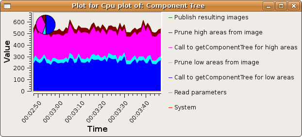

PARP Research Group
PARP Research Group
| PARP Research Group |
Universidad de Murcia |
Graphical user interface
Graphical user interface blocksCreating powerful graphical user interfaces in QVision applications is quite simple. The framework includes a versatile set of graphical blocks, which can perform several tasks while the application is running: offer the user control over several aspects of application, show resulting output data from the processing blocks (like images, point lists, etc...), inspect the execution performance, etc... The group qvgui contains these ready-to-use graphical blocks. Some of the most important are:
CPU performance measurement with the QVCPUPlotThe developer of a processing block class can divide the processing of each call to the QVProcessingBlock::iterate() function in a sequence of different stages whose computing times he wants to measure. The programmer must simply use calls to the QVProcessingBlock::timeFlag() function to mark the desired computing stages. For example, the following code of the iterate method of a processing block MyBlock::iterate()
{
[...]
timeFlag("Read parameters");
[...]
timeFlag("Call to getComponentTree for low areas");
[...]
timeFlag("Prune low areas from image");
[...some other processing stages and corresponding timeFlag's...]
}
will set some performance breakpoints in the function. The QVProcessingBlock::timeFlag() function logs the time elapsed between each two of those breakpoints, and stores the time statistics in the processing block. The performance times can be later displayed by simply pressing the CPU statistics button in the tab of the desired processing block, at the default GUI window. Of course, the computational load of these timeFlags is extremely low, and they can be used ubiquitously without almost affecting global performance. Here is a screen-shot for the above coding example:

For advanced users, which could not be interested in using the default GUI, the class QVCPUPlot can still be used to display the CPU usage statistics of a processing block. For example, the following main function void main() { [...] MyBlock myBlock("name"); [...] QVCPUPlot cpuPlot("CPU Plot", true, 10); cpuPlot.linkProperty(myBlock); } will create in execution time the following window, displaying time statistics for the different time segments specified with the QVProcessingBlock::timeFlag() method, just as before.
|